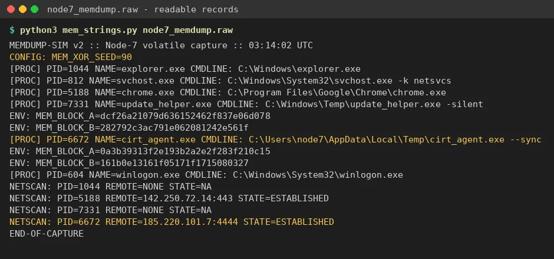
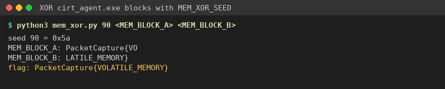

01Start point: node7_memdump.raw (2.7 KB, "MEMDUMP-SIM v2 :: Node-7 volatile capture :: 03:14:02 UTC").
- What I found: random filler bytes with readable records in between: [PROC] entries (explorer.exe, svchost.exe, chrome.exe, update_helper.exe, cirt_agent.exe, winlogon.exe), ENV: lines, a NETSCAN section, and "CONFIG: MEM_XOR_SEED=90".
02Pivot: the suspicious process.
- What I found: NETSCAN shows PID 6672 cirt_agent.exe, running from %LOCALAPPDATA%\Temp with "--sync", holding an ESTABLISHED connection to 185.220.101.7:4444. Port 4444 is the classic reverse-shell / Metasploit port.
- Its environment holds two blocks: MEM_BLOCK_A=0a3b39313f2e193b2a2e2f283f210c15 MEM_BLOCK_B=161b0e13161f05171f1715080327
- Dead end: update_helper.exe also has MEM_BLOCK_A/B values, but it has no network connection and its blocks don't decode with the seed, so it is a decoy.

03Decoding.
- Thinking: the config line hands over the key. MEM_XOR_SEED=90 is decimal 90 = 0x5A.
- What I did: hex-decoded A + B and XORed every byte with 0x5A.
- Result: block A = "PacketCapture{VO", block B = "LATILE_MEMORY}", joined = PacketCapture{VOLATILE_MEMORY}.
